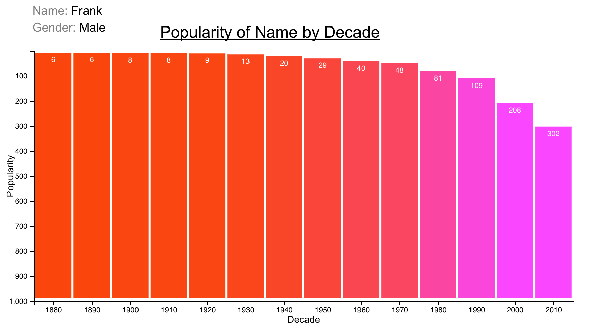
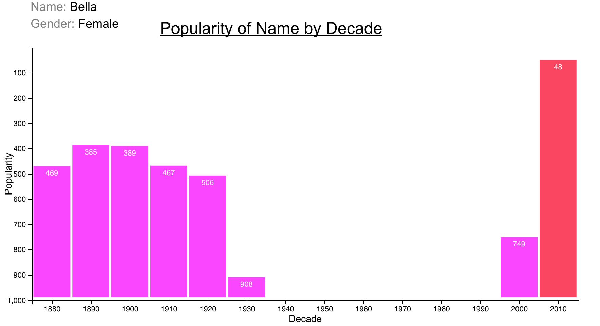
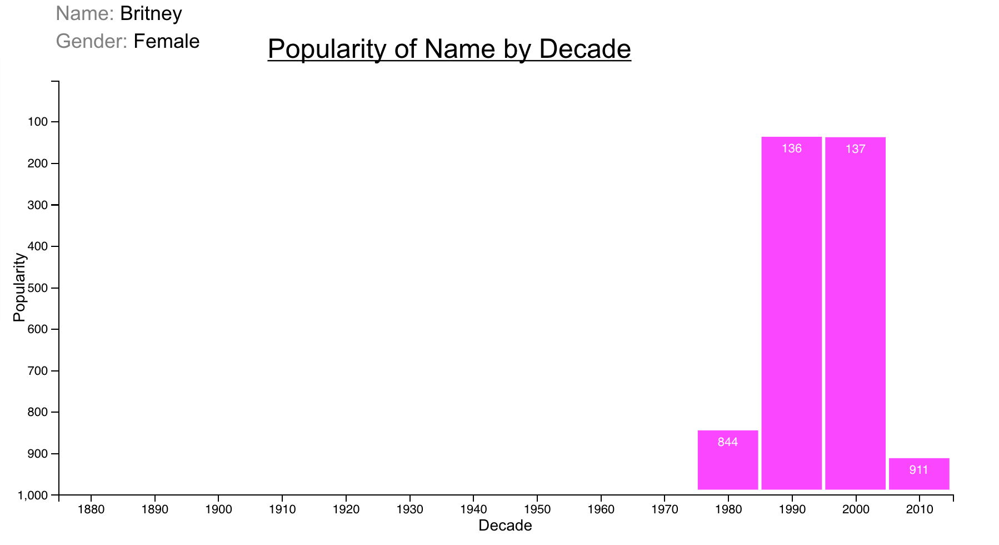
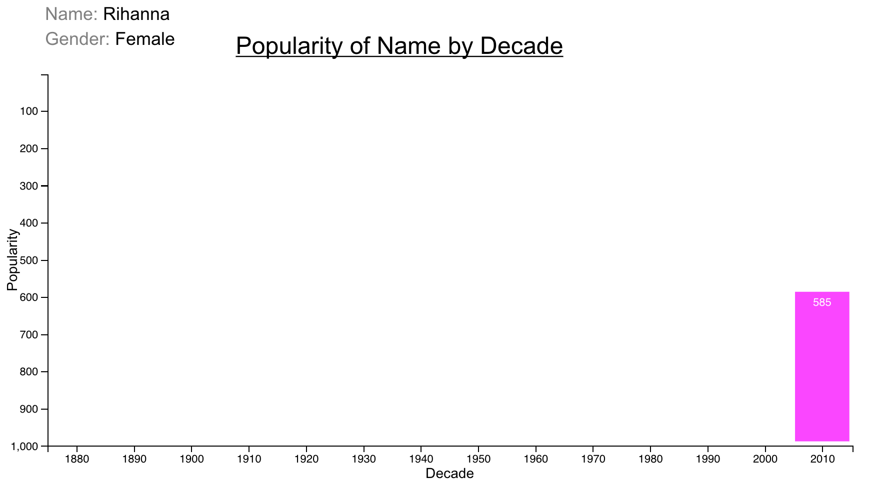
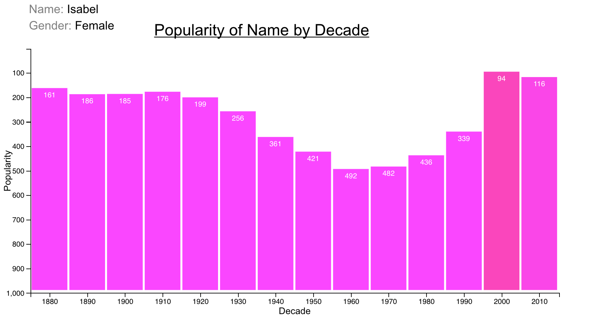

This tool is intended for helping anyone interested in exploring data about birth names by decade in the United States since 1880.
The reason 1880 is our starting point, is because that is the data available to us through the social security administration and data.gov.
I have included a link to the source (by year) in the header of this page.
MY SEARCH THROUGH THE DATA
Finding Trends and Comparing Data
Since my name is commonly spelled a number of ways, I thought it would be interesting to compare which has been most popular in the U.S.
By comparing the mean popularity of Alan, Allen, and
Allan - I was able to figure out that Allen has been the most common spelling, with Alan coming in second and Allan coming in third.
There are other names which show up or fade out in popularity so quickly I thought I would mention them too. I have included some visuals on examples including Britney, Bella, Rihanna, and Isabel. The name Britney exploded in popularity in 1990 through 2000, then went straight back down. Bella has become one of the most popular girl names in the past 10 years or so, and Rihanna is seen on the graph for the first time during the last decade.
If you're interested in looking up names, take a look and start searching...
There are other names which show up or fade out in popularity so quickly I thought I would mention them too. I have included some visuals on examples including Britney, Bella, Rihanna, and Isabel. The name Britney exploded in popularity in 1990 through 2000, then went straight back down. Bella has become one of the most popular girl names in the past 10 years or so, and Rihanna is seen on the graph for the first time during the last decade.
If you're interested in looking up names, take a look and start searching...
VISUALS




